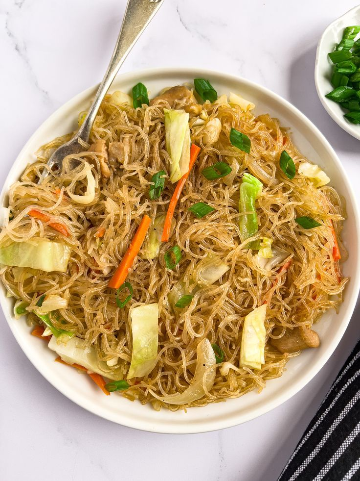

Sinigang na Baboy
A Filipino soup or stew characterized by its sour and savory taste.
View Recipe

Chicken Adobo
a dish that is usually made with meat (chicken, pork, or beef)
View Recipe

Kare-Kare
A Philippine stew that features a thick savory peanut sauce.
View Recipe

Pancit
Pancit is any type of noodle in the Philippines like rice vermicelli.
View Recipe

Leche Flan
It resembles crème caramel and caramel custard.
View Recipe